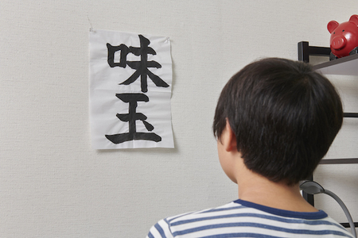

伝えたいこと
こんにちは。おだです。
一言伝えたい。
「みんな、ありがとう。そして、ありがとう。」
寝る前に妄想するストーリーがシーズン６に入った件
といってもこれパクリなのでやっぱやめておきますね。
あとがき
ちゃんと書きます。
そうですね。いろんな方が見られると思うので文字を太くしておじいちゃんおばあちゃんにも読めるようにしておきましょう。
近眼の方もこれで一安心ですね。
大きくするとなお良し、こんな感じで
マダガスカル
ちなみに僕はレイヤ君が良く言っている「おじいちゃん、ご飯はおととい食べたでしょ？」が好きです。
地味なサイコパス感がたまりません。あとマヨコーンが真横ーんｗｗｗｗも好きです。
といっても、まあ僕は文才がないし、語録開放（おだが日本語を間違えたときに言われる言葉。
間違えた例：よくおうりょく野菜。打合せ場所に打ち合う。)
など言われかねないので、ここはあえて自己紹介というなの自己顕示欲を満たしていこうかなと思います。
が、ソフメ以外の人にも見られると考えると怖くなってきたので止めておきます。 ﾈｯﾄﾘﾃﾗｼｰ
（皆さんもSNSにはご注意を。僕は常にオバマ大統領が見ている可能性があると考えてます。）
（うーん…しかし参ったな…話すことがないな…Vtuberの樋口楓について語ろうとしたけど、某SC先輩とネタと（ ここだけの話、キズナアイってめちゃくちゃ可愛いよな )と被ってしまう…）
好きな映画、布教
とりあえず面白かった映画の宣伝でもして場を乗り切ることにします。
-
ファイト・クラブ
男性に是非見てほしい。男ってかっこいいor愚かと意見が分かれるであろういい映画。最後の怒涛の展開もやばい。
-
イミテーション・ゲーム/エニグマと天才数学者の秘密
第二次世界大戦の暗号のお話。アップルのロゴの元ネタがわかるよ。
-
キャッチ・ミー・イフ・ユー・キャン
詐欺師とFBIのお話。まんまルパンと銭形警部みたいな感じ。なんと実話。
-
帰ってきたヒトラー
ニコニコ動画で有名なあのシーンとかまんま出ます。でも最後は考えさせられるコメディー映画
-
マッチスティック・メン
詐欺師してたけど、健気でかわいい親戚の子供と過ごすことになった話。最後の５分で騙されるのはあなた。
-
９６時間
９６時間以内に海外でさらわれてた娘を元特殊部隊の父が助ける話。推理＆アクションともによし。
ブロガーっぽいこと
まああと、ブロガーっぽいこともしたいのでイラストでも貼りますね。


そろそろ企画者に怒られそうなので本当にまじめな話をしよう
マルチ班班長として、そして伝えたいこと
ソフトメディア研究会に入って、思えば今後生きててこんなことするかな？っと想像してもなかなかできない体験を多くしてきました。
まず普通に考えてみたら、イラストをみんなの前に発表！って機会今後生きててあるかって言われたら考えてみても、もう本当にないでしょう。
今書いているアドベントカレンダーもSB君が立案してくれなかったら書くことはなかったでしょうし。
音楽作ったからジャケットイラストと一緒にみんなの前で発表！！これもなさそうですよね。
ゲームを三日で作って発表！文化祭でお客さんにイラストを見てもらおう！線画交換やワンドロしよう！！
大学のサークルでしかできない事って考えてみれば山ほどあります。
多分僕はこれから生きていく中で二度としない体験を今しています。それくらい貴重で最高な時間です。
でも時間は残酷で、早いことにもう僕も二回生になり来年からは三回生になります。本当に早いと思います。
でも早いなら密度の濃いことをいろいろうやってやればいい。それはソフトメディア研究会部員ならできます。
やってみたいことがあれば行動に移してみてください。僕も最後まで全力で協力させていただきます。
そして、これからを過ごすソフトメディア研究会部員みんなに
全力で楽しんでください。ソフメにはその環境があります。
以上でアドベントカレンダー最終日の締めとさせていただきます。ご拝読ありがとうございました！